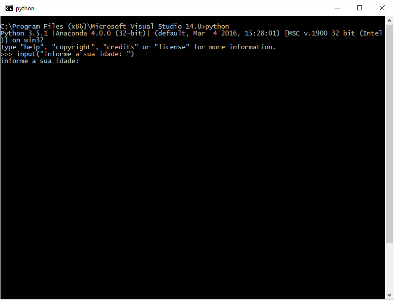

|
Nesta aula estudaremos a entrada de dados numa aplicação e como o Python trata nativamente. |
ENTRADA DE DADOS
Entrada de Dados é a forma como enviamos informações para dentro de aplicações escritas em Python. A forma mais primitiva de enviar dados para uma aplicação é pelo Prompt de Comando, isto é, pelo Console propriamente dito.
Uma aplicação pode, a qualquer momento, pedir que o usuário informe uma determinada informação, para isto, basta invocar a função input().
A partir da versão 3 do Python, a função input(), tem por objetivo de escrever a String passada como parâmetro e em seguida, ativar o modo de digitação, isto é, colocar o Console de uma determinada forma em que seja possível a digitação (entrada de dados). É importante observar que versões anteriores do Python funcionavam de maneira distinta, e também, que a função input() nas versões 2x era utilizado para outro finalidade!
A seguir, temos um exemplo onde imprimimos uma frase na tela e em seguida, é aberto para o usuário, a capacidade para digitação de letras e números.
#coding: utf-8
input("Escreva entre aspas alguma informação a ser impressa no Console ")
O código acima, quando executado, irá imprimir o que está entre parêntesis no Console e em seguida, permitira ao usuário a digitação de qualquer tipo de dado alfanumérico. O conjunto de caracteres digitado pelo usuário, será retornado pela função input(). É responsabilidade do programador armazenar esses caracteres numa variável, como fazemos no exemplo a seguir:
#coding: utf-8
num = input("Digite um número:")
print(num)
No exemplo acima, será impresso a frase definida entre aspas e então, o console entrará num modo que permitirá o usuário digitar texto e números. Após o usuário digitar o que desejar e pressionar a tecla Enter, os dados digitados serão retornados pela função input(). No exemplo acima, estamos atribuindo o retorno da função para a variável num, logo, a mesma receberá aquilo que o usuário digitou no Console antes de pressionar a tecla Enter.
Por fim, imprimimos na tela os caracteres digitados pelo nosso usuário através da função print().
OUTRAS FORMAS PARA ENTRADA DE DADOS
Uma aplicação pode receber dados através das mais distintas formas, como por exemplo, pela leitura de um arquivo, através dos protocolos TCP/IP, pelo uso de janelas gráficas, como por exemplo, a biblioteca TkInter, que é a forma nativa para a construção de Janelas Gráficas no Python e etc.
Há diversas maneiras para recebermos informações, porém, o princípio de como trataremos esses dados será, na maior parte da vezes o mesmo.
|
Certifique-se estar utilizando a versão 3.x do Python, do contrário, a função input() terá funcionamento anomalo e a sua aplicação não será executada da maneira correta! Por isso lembre-se: se você estiver tendo problemas, averigue a versão do Python instalada em seu computador! |
EXEMPLO FEITO EM AULA
A seguir, temos o exemplo feito na vídeo aulas do Curso de Python da eXcript:
#coding: utf-8
login = input("Login:")
senha = input("Senha:")
print("O usuário informado foi: %s, e a senha digitada foi: %s" %(login, senha))
Tags curso, python, entrada padrão, entrada de dados, input, blog
Comentários
comments powered by Disqus